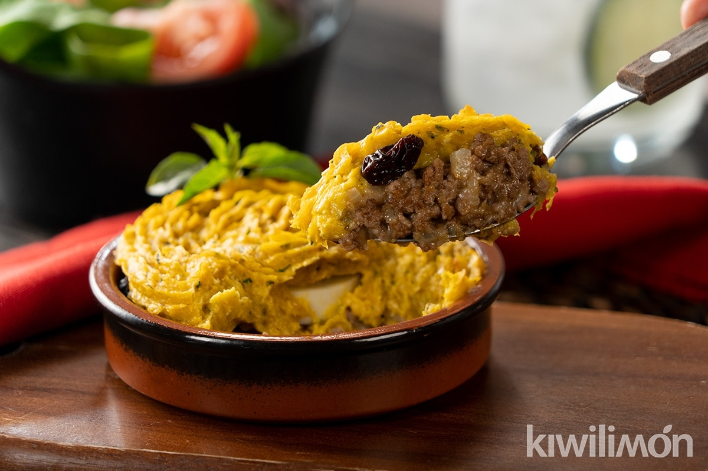

Pastel de Choclo

Description
Pastel de choclo ("corn pie" or "corn cake") is a South American dish made from sweetcorn or choclo. It is similar to the pastel de elote found in Mexican cuisine and to the English corn pudding. The filling usually contains ground beef, chicken, raisins, black olives, onions, or slices of hard boiled egg. It is traditional in the gastronomies of Argentina, Bolivia, Chile, Colombia, Ecuador, Paraguay, Peru, Uruguay
Ingredients
For the "Pino"
- 1 Tablespoon of oil
- 2 Onions
- 500 gr of minced meat
- 1 Teaspoon of cumin
- 1 Teaspoon of coloured chili
- 1 Tablespoon of oregano
- 1 Teaspoon of meat seasoning
- 1/2 cup of raisins
- 6 short chicken legs
- 3 boiled eggs
- 1/2 cup of black olives
For the Cake
- 10 to 12 cake corns
- 1 Teaspoon of basil
- 1 Tablespoon of butter
- 3/4 cup of milk
- 1 Teaspoon of salt
- More basil at will
For the cover
Steps
- Heat the oil in a large skillet, add the chopped onion, and cook until it's transparent and soft. Add the ground meat and seasonings, cook until the meat is cooked through (the filling should be juicy). Add the raisins and set aside.
- For the corn layer, remove the kernels from the cob and then process them along with the dried basil until you have a paste. Heat the butter in a pot, add the corn paste, and cook for a couple of minutes. Add the milk and cook, stirring, until you have a thick mixture. Season with salt and chopped basil. Divide the filling into 6 individual (lightly buttered) baking dishes or in a large clay dish. Place 2 olives, half a hard-boiled egg, and a piece of chicken in each dish. Finally, cover with the corn paste. Sprinkle each pie with sugar.
- Preheat the oven to 190°C. Bake the corn pies for 30 to 35 minutes or until they are bubbling and the tops are golden brown.
Return to Top
Return to Main Page